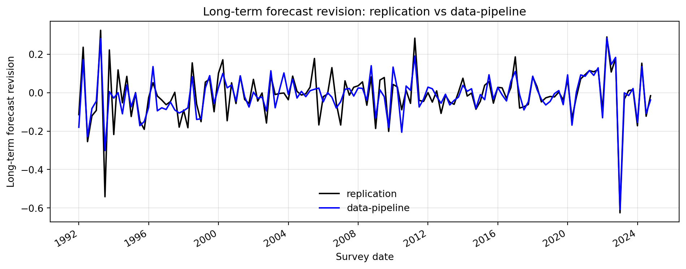
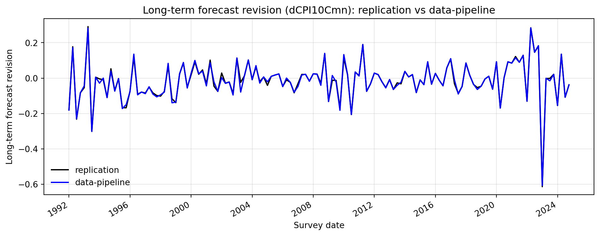
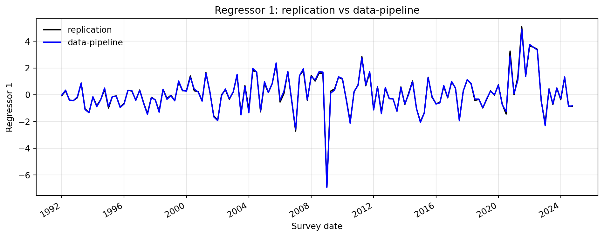
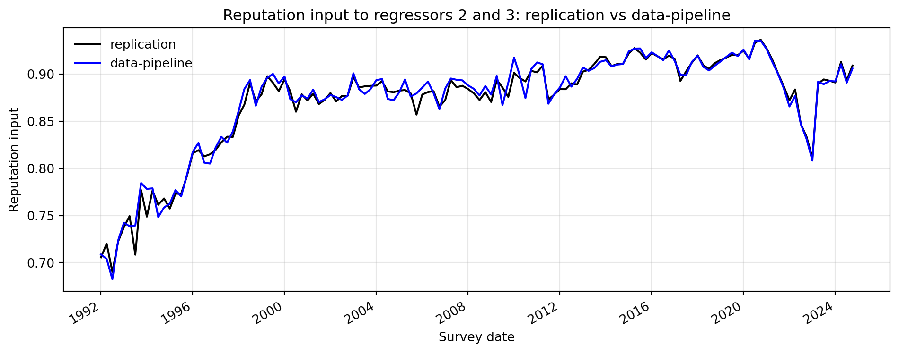

Comparison Note
Overview
Comparison source note.
Overlapping sample window: 1992:Q1 to 2024:Q4.
Series Sources
Dependent variable comparison 1:
replication->replication/replicate_figure.py:model_input['dCPI10mn']data-pipeline->data-pipeline/src/spf_adjust.py:regression_dataset['r_bar']forx_definition='raw_cpi10'
Dependent variable comparison 2:
replication->replication/replicate_figure.py:model_input['dCPI10Cmn']data-pipeline->data-pipeline/src/spf_adjust.py:regression_dataset['r_bar']forx_definition='raw_cpi10'
Regressor 1:
replication->replication/replicate_figure.py:model_input['FR0']data-pipeline->data-pipeline/src/spf_adjust.py:regression_dataset['n_bar']forx_definition='raw_cpi10'
Reputation-related survey-level input to regressors 2 and 3:
replication->replication/replicate_figure.py:model_input['rhob'].shift(1), saved in the comparison script asrhob_prev_likedata-pipeline->data-pipeline/src/spf_adjust.py:regression_dataset['rho_bar_prev']forx_definition='raw_cpi10'
Findings
Definition note:
These are not equivalent objects. replication uses a legacy survey-level reputation proxy derived from the current-quarter all-respondent CPI10 mean and then shifted one quarter. data-pipeline uses the matched-sample mean of previous-survey forecaster-level rho.
Verified root cause note:
In replication/replicate_figure.py, model_input['rhob'] is constructed from model_input['CPI10Cmn']. Despite the name, CPI10Cmn is not a continuing-member mean. It is computed as the mean of all current-quarter respondents. Therefore the replication reputation input inherits all-respondent composition changes, while data-pipeline’s rho_bar_prev is a matched-sample previous-survey mean. This naming/definition mismatch is a root cause of the reputation-input difference, and it also underlies the original dCPI10mn dependent-variable mismatch.
Verified long-term forecast revision root cause:
In replication/replicate_figure.py, the script does calculate a continuing-member change proxy via an outer merge of adjacent quarters and np.nanmean(change), but that quantity is stored as model_input['dCPI10Cmn'] and is not used as the dependent variable in the fitted figure workflow. Instead, the fitted figure uses model_input['dCPI10mn'], which is the first difference of the all-respondent quarterly mean CPI10 series. This creates a built-in divergence between the more revision-like quantity already available inside the replication script and the quantity actually plotted and regressed. The separate saved comparison compare_long_term_forecast_revision_continuing.png supports this as a verified local root cause of why the replication dependent variable departs from data-pipeline’s regression_dataset['r_bar'].
Verified cumulative-plot start note:
With the actual raw-input data, data-pipeline’s regression_dataset['r_bar'] does not begin in 1991:Q4. Its first actual observation is 1992:Q1, because a forecast revision requires a previous-quarter CPI10 observation. The first fitted values in data-pipeline at 1992:Q1 are small negative numbers, not zeros. Therefore any apparent zero start in the plotted fitted lines is a visual impression from scale, not a property of the computed fitted series. By contrast, replication’s cumulative data series shows 0 at the start because model_input['dCPI10mn'] is missing at 1991:Q4 and the code applies np.nancumsum, which leaves the cumulative path at zero until the first non-missing change.
Figures
Long-Term Forecast Revision
Long-Term Forecast Revision, Continuing-Member Proxy

Regressor 1

Reputation Input

Embedded Python Code
```python
from __future__ import annotations
import json
import sys
from pathlib import Path
import matplotlib.pyplot as plt
import pandas as pd
COMPARE_DIR = Path(__file__).resolve().parent
REPLICATION_DIR = COMPARE_DIR.parent
REPO_ROOT = REPLICATION_DIR.parent
DATA_PIPELINE_DIR = REPO_ROOT / "data-pipeline"
sys.path.insert(0, str(REPLICATION_DIR))
sys.path.insert(0, str(DATA_PIPELINE_DIR))
from replicate_figure import build_cpiall, build_lte, load_excel_table # noqa: E402
from src.spf_adjust import ( # noqa: E402
RAW_CPI10_X_SOURCE,
construct_inflation_news,
construct_reputation_measure,
construct_regression_dataset,
select_long_term_inflation_expectation,
)
from src.spf_clean import build_forecast_individual, load_individual_sheet # noqa: E402
def _load_pipeline_forecast_individual() -> pd.DataFrame:
input_dir = DATA_PIPELINE_DIR / "input"
individual_paths = [
input_dir / "Individual_CPI.xlsx",
input_dir / "Individual_CPI10.xlsx",
]
frames = [load_individual_sheet(path=path) for path in individual_paths]
df_long = pd.concat(frames, ignore_index=True)
return build_forecast_individual(df_long=df_long)
def _build_replication_model_input() -> pd.DataFrame:
short_horizon_raw = load_excel_table(path=REPLICATION_DIR / "rawdata" / "Individual_CPI.xlsx")
long_horizon_raw = load_excel_table(path=REPLICATION_DIR / "rawdata" / "Individual_CPI10.xlsx")
cpiall = build_cpiall(short_horizon_raw=short_horizon_raw)
lte = build_lte(long_horizon_raw=long_horizon_raw)
model_input = cpiall["cont_revisions"].merge(
lte,
how="outer",
left_on="fdat",
right_on="ltfdat",
)
model_input["fdat"] = model_input["fdat"].combine_first(model_input["ltfdat"])
model_input = model_input.drop(columns=["ltfdat"])
model_input = model_input.sort_values(by="fdat", kind="mergesort").reset_index(drop=True)
gam = 0.97
a = 1.5
alph = 9.5
za = 3.9
zalph = 8.5
num_a = gam * a + (1.0 - gam) * za
num_alph = gam * alph + (1.0 - gam) * zalph
model_input["rhob"] = (num_alph - model_input["CPI10Cmn"]) / (num_alph - num_a)
model_input["rhob_prev_like"] = model_input["rhob"].shift(1)
return model_input
def _build_pipeline_regression_dataset() -> pd.DataFrame:
forecast_individual = _load_pipeline_forecast_individual()
x_table = select_long_term_inflation_expectation(
forecast_individual=forecast_individual,
config={"x_definition": RAW_CPI10_X_SOURCE},
)
inflation_news = construct_inflation_news(forecast_individual=forecast_individual)
with open(DATA_PIPELINE_DIR / "config" / "reputation_measure.json", encoding="utf-8") as file:
reputation_config = json.load(file)
reputation_measure = construct_reputation_measure(
x_table=x_table,
config=reputation_config,
)
return construct_regression_dataset(
x_table=x_table,
inflation_news=inflation_news,
reputation_measure=reputation_measure,
)
def _to_quarter_start(*, year: pd.Series, quarter: pd.Series) -> pd.Series:
quarter_period = pd.PeriodIndex(
[f"{int(y)}Q{int(q)}" for y, q in zip(year, quarter)],
freq="Q",
)
return pd.Series(quarter_period.to_timestamp(how="start"), index=year.index)
def _extract_replication_series(model_input: pd.DataFrame) -> pd.DataFrame:
out = model_input.loc[
:,
["fdat", "dCPI10mn", "dCPI10Cmn", "FR0", "rhob_prev_like"],
].copy()
out = out.rename(
columns={
"fdat": "survey_date",
"dCPI10mn": "long_term_forecast_revision",
"dCPI10Cmn": "long_term_forecast_revision_continuing",
"FR0": "regressor_1",
"rhob_prev_like": "reputation_input",
}
)
out["survey_date"] = pd.to_datetime(out["survey_date"])
return out
def _extract_pipeline_series(regression_dataset: pd.DataFrame) -> pd.DataFrame:
out = regression_dataset.loc[
:,
["survey_year", "survey_quarter", "r_bar", "n_bar", "rho_bar_prev"],
].copy()
out["survey_date"] = _to_quarter_start(
year=out["survey_year"],
quarter=out["survey_quarter"],
)
out = out.rename(
columns={
"r_bar": "long_term_forecast_revision",
"n_bar": "regressor_1",
"rho_bar_prev": "reputation_input",
}
)
return out.loc[:, ["survey_date", "long_term_forecast_revision", "regressor_1", "reputation_input"]]
def _series_bounds(series: pd.Series, dates: pd.Series) -> tuple[pd.Timestamp, pd.Timestamp]:
valid = series.notna()
if not valid.any():
raise ValueError("Series has no non-missing observations.")
valid_dates = pd.to_datetime(dates.loc[valid])
return valid_dates.min(), valid_dates.max()
def _compute_overlap_window(replication_panel: pd.DataFrame, pipeline_panel: pd.DataFrame) -> tuple[pd.Timestamp, pd.Timestamp]:
starts: list[pd.Timestamp] = []
ends: list[pd.Timestamp] = []
for column in ["long_term_forecast_revision", "regressor_1", "reputation_input"]:
rep_start, rep_end = _series_bounds(
series=replication_panel[column],
dates=replication_panel["survey_date"],
)
pipe_start, pipe_end = _series_bounds(
series=pipeline_panel[column],
dates=pipeline_panel["survey_date"],
)
starts.append(max(rep_start, pipe_start))
ends.append(min(rep_end, pipe_end))
overlap_start = max(starts)
overlap_end = min(ends)
if overlap_start > overlap_end:
raise ValueError("No overlapping sample window across the requested series.")
return overlap_start, overlap_end
def _restrict_to_window(panel: pd.DataFrame, *, start: pd.Timestamp, end: pd.Timestamp) -> pd.DataFrame:
dates = pd.to_datetime(panel["survey_date"])
return panel.loc[(dates >= start) & (dates <= end)].copy()
def _build_comparison_panel(
replication_panel: pd.DataFrame,
pipeline_panel: pd.DataFrame,
*,
replication_value_column: str,
pipeline_value_column: str,
start: pd.Timestamp,
end: pd.Timestamp,
) -> pd.DataFrame:
rep = _restrict_to_window(replication_panel, start=start, end=end).rename(
columns={replication_value_column: "replication"}
)
pipe = _restrict_to_window(pipeline_panel, start=start, end=end).rename(
columns={pipeline_value_column: "data_pipeline"}
)
merged = rep.loc[:, ["survey_date", "replication"]].merge(
pipe.loc[:, ["survey_date", "data_pipeline"]],
how="inner",
on="survey_date",
)
return merged.sort_values("survey_date").reset_index(drop=True)
def _plot_comparison(panel: pd.DataFrame, *, title: str, y_label: str, output_path: Path) -> None:
figure, axis = plt.subplots(figsize=(10, 4))
x_values = pd.to_datetime(panel["survey_date"]).to_numpy()
axis.plot(x_values, panel["replication"].to_numpy(), color="black", linewidth=1.5, label="replication")
axis.plot(x_values, panel["data_pipeline"].to_numpy(), color="blue", linewidth=1.5, label="data-pipeline")
axis.set_title(title)
axis.set_ylabel(y_label)
axis.set_xlabel("Survey date")
axis.grid(True, alpha=0.3)
axis.legend(frameon=False)
figure.autofmt_xdate()
figure.tight_layout()
figure.savefig(output_path, dpi=300, bbox_inches="tight")
plt.close(figure)
def _write_note(*, sample_start: pd.Timestamp, sample_end: pd.Timestamp) -> None:
note = "\n".join(
[
"Comparison source note",
"",
f"Overlapping sample window: {sample_start.strftime('%Y:Q')}{sample_start.quarter} to {sample_end.strftime('%Y:Q')}{sample_end.quarter}",
"",
"Dependent variable comparison 1:",
" replication -> replication/replicate_figure.py : model_input['dCPI10mn']",
" data-pipeline -> data-pipeline/src/spf_adjust.py : regression_dataset['r_bar'] for x_definition='raw_cpi10'",
"",
"Dependent variable comparison 2:",
" replication -> replication/replicate_figure.py : model_input['dCPI10Cmn']",
" data-pipeline -> data-pipeline/src/spf_adjust.py : regression_dataset['r_bar'] for x_definition='raw_cpi10'",
"",
"Regressor 1:",
" replication -> replication/replicate_figure.py : model_input['FR0']",
" data-pipeline -> data-pipeline/src/spf_adjust.py : regression_dataset['n_bar'] for x_definition='raw_cpi10'",
"",
"Reputation-related survey-level input to regressors 2 and 3:",
" replication -> replication/replicate_figure.py : model_input['rhob'].shift(1), saved here as 'rhob_prev_like'",
" data-pipeline -> data-pipeline/src/spf_adjust.py : regression_dataset['rho_bar_prev'] for x_definition='raw_cpi10'",
"",
"Definition note:",
" These are not equivalent objects. replication uses a legacy survey-level reputation proxy derived from the current-quarter all-respondent CPI10 mean and then shifted one quarter. data-pipeline uses the matched-sample mean of previous-survey forecaster-level rho.",
]
)
(COMPARE_DIR / "comparison_note.txt").write_text(note + "\n", encoding="utf-8")
def main() -> None:
COMPARE_DIR.mkdir(parents=True, exist_ok=True)
replication_model_input = _build_replication_model_input()
pipeline_regression_dataset = _build_pipeline_regression_dataset()
replication_panel = _extract_replication_series(replication_model_input)
pipeline_panel = _extract_pipeline_series(pipeline_regression_dataset)
overlap_start, overlap_end = _compute_overlap_window(
replication_panel=replication_panel,
pipeline_panel=pipeline_panel,
)
comparison_specs = [
(
"long_term_forecast_revision",
"long_term_forecast_revision",
"compare_long_term_forecast_revision.png",
"Long-term forecast revision: replication vs data-pipeline",
"Long-term forecast revision",
),
(
"long_term_forecast_revision_continuing",
"long_term_forecast_revision",
"compare_long_term_forecast_revision_continuing.png",
"Long-term forecast revision (dCPI10Cmn): replication vs data-pipeline",
"Long-term forecast revision",
),
(
"regressor_1",
"regressor_1",
"compare_regressor_1.png",
"Regressor 1: replication vs data-pipeline",
"Regressor 1",
),
(
"reputation_input",
"reputation_input",
"compare_reputation_input.png",
"Reputation input to regressors 2 and 3: replication vs data-pipeline",
"Reputation input",
),
]
for replication_value_column, pipeline_value_column, filename, title, y_label in comparison_specs:
panel = _build_comparison_panel(
replication_panel=replication_panel,
pipeline_panel=pipeline_panel,
replication_value_column=replication_value_column,
pipeline_value_column=pipeline_value_column,
start=overlap_start,
end=overlap_end,
)
panel.to_csv(COMPARE_DIR / f"{replication_value_column}_comparison.csv", index=False)
_plot_comparison(
panel=panel,
title=title,
y_label=y_label,
output_path=COMPARE_DIR / filename,
)
_write_note(sample_start=overlap_start, sample_end=overlap_end)
print(f"Saved comparison outputs to {COMPARE_DIR}")
print(
"Overlapping sample window:",
f"{overlap_start.year}:Q{overlap_start.quarter}",
"to",
f"{overlap_end.year}:Q{overlap_end.quarter}",
)
if __name__ == "__main__":
main()
```